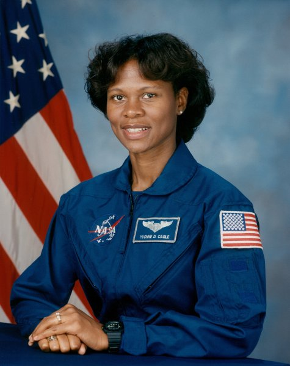

Home
Marie Curie's relentless resolve and insatiable curiosity made her an icon in the world of modern science. Indefatigable despite a career of physically demanding and ultimately fatal work, she discovered polonium and radium, championed the use of radiation in medicine and fundamentally changed our understanding of radioactivity. More...www.nobelprize.org
Dr. Yvonne Darlene Cagle is an astronaut for the National Aeronautics and Space Administration (NASA), and consulting professor for Stanford University's department of cardiovascular medicine and its department of electrical engineering. In addition, Dr. Cagle also has served as a certified senior aviation medical examiner for the Federal Aviation Administration and a qualified advanced cardiac life support instructor. More...www.nasa.gov
